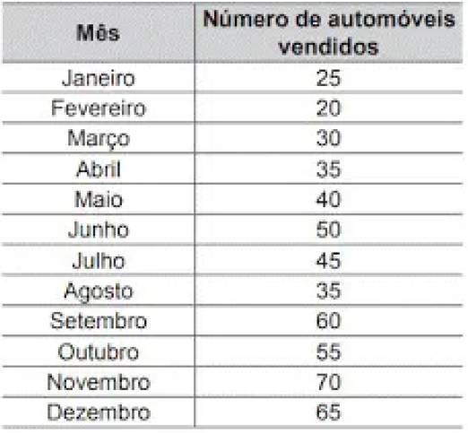

2.2 Mediana e Moda:
APRESENTAÇÃO
CONTEÚDO
EXERCÍCIOS PRÁTICOS
EXERCÍCIOS RESOLVIDOS
Questão 1:
(Enem 2021) O gerente de uma concessionária apresentou a seguinte tabela em uma reunião de dirigentes. Sabe-se que ao final da reunião, a fim de elaborar metas e planos para o próximo ano, o administrador avaliará as vendas com base na mediana do número de automóveis vendidos no período de janeiro a dezembro.

Qual foi a mediana dos dados apresentados?
A) 40,0
B) 42,5
C) 45,0
D) 47,5
E) 50,0
PRÓXIMO ⭢